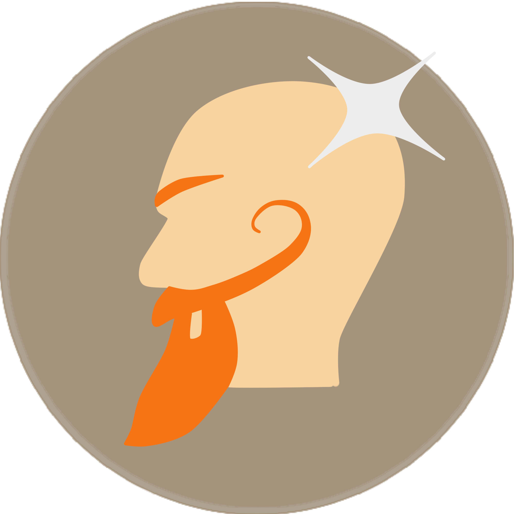

Cian O'Síoráin :
Web developer
App designer
Giant robot enthusiast
Cian O'Síoráin :
Web developer
App designer
Giant robot enthusiast
A web developer for the changing webscape
Home
Projects
Contact
Developed by Cian O'Síoráin
Hosted on -------
Current version 0.1